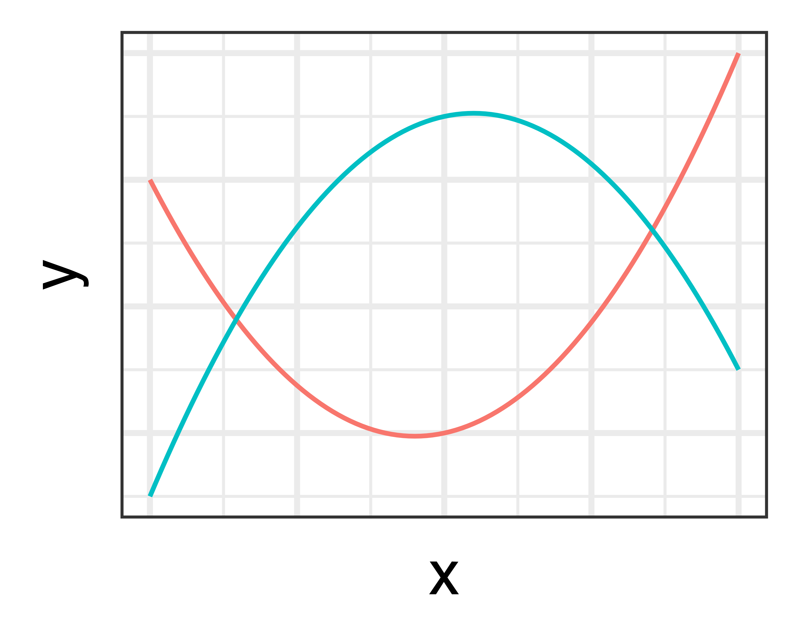
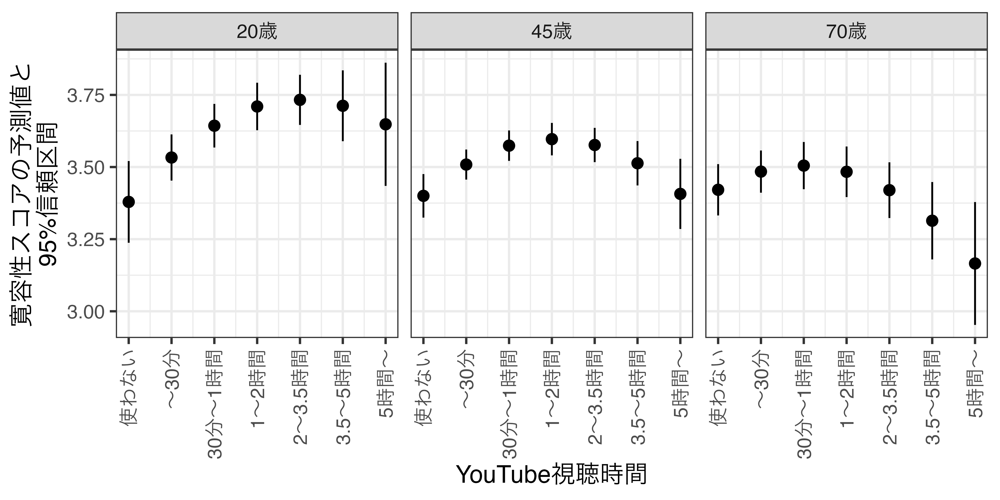

マクロ政治データ分析実習
12/ まとめ
宋 財泫
関西大学総合情報学部
授業開始前に
すぐに実習できるように準備しておきましょう。
- JDCat分析ツールを起動しておいてください。
- 本日授業用のプロジェクトを作成するか、既存のプロジェクトを開いてください。
- LMSから実習用データをダウンロードしておいてください。
- ダウンロードしてデータをプロジェクト・フォルダーにアップロードしてください。
- プロジェクト・フォルダー内に
Dataフォルダーを作成し、そこにアップロードしましょう。
- プロジェクト・フォルダー内に
- 実習用コードを入力するスクリプト、またはQuartoファイルを開き、以下のコードを入力&実行してください（コピペ可）。
- トラブルが生じた場合、速やかにTAを呼んでください。
- 時間に余裕があれば、スライド内のコードも書いておきましょう。
リサーチデザイン
問題設定
YouTube視聴は人々の寛容性にどのような影響を与えるだろうか。YouTubeは誰でもコンテンツが作成・公開できるため、様々な考え方に接触できるツールとして活用できるため、寛容性に正の影響を与えると考えられる。しかし、YouTubeのおすすめ動画は視聴者の閲覧履歴に基づいて提案され、類似したテーマと内容のものが提案んされるケースが多い。したがって、YouTube操作に慣れていない人はおすすめされた動画のみを視聴し、寛容性に負の影響を与えると考えられる。また、このようなインターネットサービスには若年層が高齢者よりも操作に慣れている可能性が高いと考えられる。
- 仮説：YouTube視聴時間は寛容性の程度に影響を与えるが、その影響は年齢によって異なる。
- 仮説（a）：若年層ほどYouTube視聴時間は寛容性の程度には正の関係がある。
- 仮説（b）：高齢者ほどYouTube視聴時間は寛容性の程度には負の関係がある。
- 有意水準（\(\alpha\)）は5%を採用（\(\alpha = 0.05\)）
必要な変数は?
- 応答変数（結果）：寛容性の度合い
- 主要説明変数（原因）：YouTube視聴時間
- 統制変数（原因と結果両方に影響を与えると考えられる変数）
- 性別、年齢、学歴、…
- 無数に存在するため、中でもその影響力が強いと思うものを選定し、（自分でデータを収集するのであれば）測定・収集する。
- 公開済みデータを利用する分析（2次分析）であれば、応答変数と主要説明変数が含まれたデータを見つけたら、そのデータの中から統制変数として適切なものを選ぶ。
- 今回は（奇跡的にも）適切なデータが見つかったので、それを使う。
データ
データ読み込み
library(tidyverse)
library(fastDummies)
library(summarytools)
library(modelsummary)
library(marginaleffects)
df <- read_csv("Data/youtube.csv")
df# A tibble: 3,122 × 11
fem age educ inc child youtube diver1 diver2 diver3 diver4 diver5
<dbl> <dbl> <dbl> <dbl> <dbl> <dbl> <dbl> <dbl> <dbl> <dbl> <dbl>
1 0 25 5 7 1 6 1 4 4 2 3
2 0 26 5 11 1 3 3 2 3 3 3
3 0 28 5 10 1 4 5 5 5 5 5
4 1 59 5 6 1 3 3 4 4 3 4
5 1 28 5 9 1 6 2 4 4 4 4
6 0 50 5 10 1 4 4 4 4 4 4
7 0 44 4 2 1 2 3 4 4 3 4
8 1 45 5 12 1 5 2 3 3 3 4
9 1 54 5 3 2 1 4 4 4 3 4
10 0 27 5 99 1 4 3 3 3 3 3
# ℹ 3,112 more rowsデータ説明
| 変数名 | 説明 | 備考 |
|---|---|---|
fem |
性別 | 0 = 男性; 1 = 女性 |
age |
年齢 | |
educ |
学歴 | 1 = 中卒 〜 6 = 大学院; 9 = 欠損値 |
inc |
世帯収入 | 1 = なし 〜 19 = 2300万円以上; 99 = 欠損値 |
child |
子どもの有無 | 1 = なし; 2 = あり（同居）; 3 = あり（別居） |
youtube |
YouTube視聴時間（1日平均） | 1 = 見ない 〜 7 = 5時間以上 |
diver1 |
寛容性尺度11 | 高いほど寛容的（1〜5） |
diver2 |
寛容性尺度22 | 高いほど寛容的（1〜5） |
diver3 |
寛容性尺度33 | 高いほど寛容的（1〜5） |
diver4 |
寛容性尺度44 | 高いほど寛容的（1〜5） |
diver5 |
寛容性尺度55 | 高いほど寛容的（1〜5） |
データハンドリング：寛容性スコアの作成
diver1〜diver5変数を一つの変数にまとめたい。diver1からdiver5までの平均値、因子分析、主成分分析、…- ここでは平均値を採用し、計算結果を
diversity列として追加（既存のdiver1からdiver5までの列は削除）
df <- df |>
mutate(diversity = diver1 + diver2 + diver3 + diver4 + diver5,
diversity = diversity / 5) |>
select(-(diver1:diver5))
df# A tibble: 3,122 × 7
fem age educ inc child youtube diversity
<dbl> <dbl> <dbl> <dbl> <dbl> <dbl> <dbl>
1 0 25 5 7 1 6 2.8
2 0 26 5 11 1 3 2.8
3 0 28 5 10 1 4 5
4 1 59 5 6 1 3 3.6
5 1 28 5 9 1 6 3.6
6 0 50 5 10 1 4 4
7 0 44 4 2 1 2 3.6
8 1 45 5 12 1 5 3
9 1 54 5 3 2 1 3.8
10 0 27 5 99 1 4 3
# ℹ 3,112 more rowsデータハンドリング：欠損値処理
- データのよって欠損値が
NAでなく、数字になっているケースもあるため、この場合は欠損値に置換する。- 学歴（
educ）の欠損値は9、世帯収入（inc）の欠損値は99
- 学歴（
df <- df |>
mutate(educ = if_else(educ == 9, NA, educ), # educの値が9ならNAに、それ以外はそのままに
inc = if_else(inc == 99, NA, inc)) # incの値が99ならNAに、それ以外はそのままに
df# A tibble: 3,122 × 7
fem age educ inc child youtube diversity
<dbl> <dbl> <dbl> <dbl> <dbl> <dbl> <dbl>
1 0 25 5 7 1 6 2.8
2 0 26 5 11 1 3 2.8
3 0 28 5 10 1 4 5
4 1 59 5 6 1 3 3.6
5 1 28 5 9 1 6 3.6
6 0 50 5 10 1 4 4
7 0 44 4 2 1 2 3.6
8 1 45 5 12 1 5 3
9 1 54 5 3 2 1 3.8
10 0 27 5 NA 1 4 3
# ℹ 3,112 more rowsデータハンドリング：欠損の確認
colSums(is.na(表オブジェクト名))で確認可能summary(表オブジェクト名)でもOK（欠損値以外の情報も出力される）
- 学歴（
educ）が欠損したケースは56名、世帯収入（inc）のそれは411名
- 分析に使用する変数一つでも抜けている行は分析から除外する。
- 例）10行目は世帯収入（
inc）が欠損（NA）しているため、除外する必要がある。 - 参考）欠損値を補完する手法（多重代入法; multiple imputation）もある。
- 例）10行目は世帯収入（
データハンドリング：欠損した行の除外
filter()かdrop_na()を使用filter()を使用する場合、変数名 != NAでなく、!is.na(変数名)を使用する。- 前期講義の「データハンドリング（1）」を参照
# A tibble: 2,683 × 7
fem age educ inc child youtube diversity
<dbl> <dbl> <dbl> <dbl> <dbl> <dbl> <dbl>
1 0 25 5 7 1 6 2.8
2 0 26 5 11 1 3 2.8
3 0 28 5 10 1 4 5
4 1 59 5 6 1 3 3.6
5 1 28 5 9 1 6 3.6
6 0 50 5 10 1 4 4
7 0 44 4 2 1 2 3.6
8 1 45 5 12 1 5 3
9 1 54 5 3 2 1 3.8
10 0 74 5 10 3 2 3.6
# ℹ 2,673 more rowsデータハンドリング：名目変数のfactor化
- 子どもの有無（
child）は名目変数だが、現在は数値型であるため、factor型変数に変換
df <- df |>
mutate(child = factor(child, levels = c(1, 2, 3),
labels = c("子どもなし", "同居中の子どもあり", "別居中の子どもあり")))
df# A tibble: 2,683 × 7
fem age educ inc child youtube diversity
<dbl> <dbl> <dbl> <dbl> <fct> <dbl> <dbl>
1 0 25 5 7 子どもなし 6 2.8
2 0 26 5 11 子どもなし 3 2.8
3 0 28 5 10 子どもなし 4 5
4 1 59 5 6 子どもなし 3 3.6
5 1 28 5 9 子どもなし 6 3.6
6 0 50 5 10 子どもなし 4 4
7 0 44 4 2 子どもなし 2 3.6
8 1 45 5 12 子どもなし 5 3
9 1 54 5 3 同居中の子どもあり 1 3.8
10 0 74 5 10 別居中の子どもあり 2 3.6
# ℹ 2,673 more rows記述統計の計算
- 名目変数（ここでは
child）はダミー化してから計算
df |>
dummy_cols(select_columns = "child") |>
descr(stats = c("mean", "sd", "min", "max", "n.valid"),
transpose = TRUE, order = "p")Descriptive Statistics
df
N: 2683
Mean Std.Dev Min Max N.Valid
------------------------------ ------- --------- ------- ------- ---------
fem 0.51 0.50 0.00 1.00 2683.00
age 50.95 16.13 18.00 79.00 2683.00
educ 3.85 1.44 1.00 6.00 2683.00
inc 6.60 3.69 1.00 19.00 2683.00
youtube 2.94 1.52 1.00 7.00 2683.00
diversity 3.47 0.66 1.00 5.00 2683.00
child_子どもなし 0.44 0.50 0.00 1.00 2683.00
child_同居中の子どもあり 0.33 0.47 0.00 1.00 2683.00
child_別居中の子どもあり 0.23 0.42 0.00 1.00 2683.00記述統計の掲載
- レポート、論文に掲載する際はしっかり加工すること
- 変数名をそのまま使わず、誰でも分かるように
- 応答変数、主要説明変数、その他の説明変数（統制変数）の順で
| 平均値 | 標準偏差 | 最小値 | 最大値 | 有効ケース数 | |
|---|---|---|---|---|---|
| 寛容性スコア | 3.475 | 0.664 | 1 | 5 | 2683 |
| YouTube視聴時間 | 2.944 | 1.522 | 1 | 7 | 2683 |
| 女性ダミー | 0.507 | 0.500 | 0 | 1 | 2683 |
| 年齢 | 50.954 | 16.128 | 18 | 79 | 2683 |
| 学歴 | 3.849 | 1.439 | 1 | 6 | 2683 |
| 世帯収入 | 6.602 | 3.691 | 1 | 19 | 2683 |
| 子どもなし | 0.435 | 0.496 | 0 | 1 | 2683 |
| 同居中の子どもあり | 0.330 | 0.470 | 0 | 1 | 2683 |
| 別居中の子どもあり | 0.235 | 0.424 | 0 | 1 | 2683 |
推定
YouTube線形時間と寛容性間の関係
- 線形（右上がり、右下がり）?U字?逆U字?その他の関係?
- 説明変数の値ごとに応答変数の平均値を計算するか散布図から確認
# A tibble: 7 × 2
youtube diversity
<dbl> <dbl>
1 1 3.38
2 2 3.48
3 3 3.47
4 4 3.56
5 5 3.56
6 6 3.50
7 7 3.20youtube= 4か5を頂点とする「逆U字型」であるため、youtubeの2乗項も投入- 参考）1 = 使わない、2 = 30分未満、3 = 30分〜1時間未満、4 = 1〜2時間未満、5 = 2〜3.5時間未満、6 = 3.5〜5時間未満、7 = 5時間以上
（非）線形関係
- 説明変数の2乗項を追加することで非線形の関係も推定可能
- 式1：\(y = \beta_0 + \beta_1 x\)（赤）
- 式2：\(y = \beta_0 - \beta_1 x\)（青）

- 式1：\(y = \beta_0 + \beta_1 x + \beta_2 x^2\)（赤）
- 式2：\(y = \beta_0 + \beta_1 x - \beta_2 x^2\)（青）

推定モデル（1）
推定モデル（2）
推定
poly(X, 2)でXだけでなく、Xの2乗項もモデルに投入される。
fit <- lm(diversity ~ poly(youtube, 2) * age + fem + age + educ + inc + child, data = df)
summary(fit)
Call:
lm(formula = diversity ~ poly(youtube, 2) * age + fem + age +
educ + inc + child, data = df)
Residuals:
Min 1Q Median 3Q Max
-2.69345 -0.37513 0.05671 0.42330 1.71225
Coefficients:
Estimate Std. Error t value Pr(>|t|)
(Intercept) 3.1063172 0.0693572 44.787 < 2e-16 ***
poly(youtube, 2)1 8.0975241 2.2287799 3.633 0.000285 ***
poly(youtube, 2)2 -3.0631081 2.1180847 -1.446 0.148247
age -0.0026340 0.0009952 -2.647 0.008175 **
fem 0.1808630 0.0287074 6.300 3.46e-10 ***
educ 0.0435088 0.0091125 4.775 1.90e-06 ***
inc 0.0281334 0.0039815 7.066 2.03e-12 ***
child同居中の子どもあり 0.0650000 0.0301424 2.156 0.031139 *
child別居中の子どもあり 0.0977025 0.0392202 2.491 0.012794 *
poly(youtube, 2)1:age -0.1389109 0.0419930 -3.308 0.000952 ***
poly(youtube, 2)2:age 0.0018895 0.0401860 0.047 0.962502
---
Signif. codes: 0 '***' 0.001 '**' 0.01 '*' 0.05 '.' 0.1 ' ' 1
Residual standard error: 0.6464 on 2672 degrees of freedom
Multiple R-squared: 0.05474, Adjusted R-squared: 0.0512
F-statistic: 15.47 on 10 and 2672 DF, p-value: < 2.2e-16回帰表
summary(回帰オブジェクト)の結果を参照し、自分で回帰表を作っても良い。
modelsummary(
fit,
estimate = "{estimate} ({std.error}){stars}",
coef_rename = c(
"(Intercept)" = "切片",
"poly(youtube, 2)1" = "YouTube視聴時間",
"poly(youtube, 2)2" = "YouTube視聴時間の2乗",
"age" = "年齢",
"fem" = "女性",
"educ" = "学歴",
"inc" = "世帯収入",
"child同居中の子どもあり" = "同居中の子どもあり",
"child別居中の子どもあり" = "別居中の子どもあり"
),
statistic = NULL,
gof_map = c("nobs", "r.squared"),
notes = "注：カッコ内は標準誤差"
)| (1) | |
|---|---|
| 注：カッコ内は標準誤差 | |
| 切片 | 3.106 (0.069)*** |
| YouTube視聴時間 | 8.098 (2.229)*** |
| YouTube視聴時間の2乗 | -3.063 (2.118) |
| 年齢 | -0.003 (0.001)** |
| 女性 | 0.181 (0.029)*** |
| 学歴 | 0.044 (0.009)*** |
| 世帯収入 | 0.028 (0.004)*** |
| 同居中の子どもあり | 0.065 (0.030)* |
| 別居中の子どもあり | 0.098 (0.039)* |
| YouTube視聴時間:年齢 | -0.139 (0.042)*** |
| YouTube視聴時間の2乗:年齢 | 0.002 (0.040) |
| Num.Obs. | 2683 |
| R2 | 0.055 |
結果の報告
交互作用を考慮しない予測値
- YouTube視聴時間を除く全ての変数（調整変数を含む）は平均値に固定（名目変数はベースカテゴリーに固定）
youtube Estimate Std. Error z Pr(>|z|) S 2.5 % 97.5 %
1 3.41 0.0350 97.3 <0.001 Inf 3.34 3.47
2 3.50 0.0269 130.5 <0.001 Inf 3.45 3.56
3 3.56 0.0284 125.3 <0.001 Inf 3.50 3.61
4 3.57 0.0302 118.2 <0.001 Inf 3.51 3.63
5 3.54 0.0323 109.5 <0.001 Inf 3.48 3.60
6 3.47 0.0422 82.0 <0.001 Inf 3.38 3.55
7 3.35 0.0655 51.1 <0.001 Inf 3.22 3.48
Type: response 交互作用を考慮しない予測値（可視化）
交互作用を考慮した予測値
- すべての年齢に対して予測値を出すと可視化が難しいため、20、45、70歳の場合の予測値を計算
youtube age Estimate Std. Error z Pr(>|z|) S 2.5 % 97.5 %
1 20 3.38 0.0723 46.8 <0.001 Inf 3.24 3.52
1 45 3.40 0.0385 88.4 <0.001 Inf 3.32 3.48
1 70 3.42 0.0454 75.4 <0.001 Inf 3.33 3.51
2 20 3.53 0.0408 86.6 <0.001 Inf 3.45 3.61
2 45 3.51 0.0266 132.0 <0.001 Inf 3.46 3.56
2 70 3.48 0.0373 93.4 <0.001 Inf 3.41 3.56
3 20 3.64 0.0386 94.5 <0.001 Inf 3.57 3.72
3 45 3.57 0.0269 132.7 <0.001 Inf 3.52 3.63
3 70 3.50 0.0418 83.9 <0.001 Inf 3.42 3.59
4 20 3.71 0.0420 88.3 <0.001 Inf 3.63 3.79
4 45 3.60 0.0287 125.3 <0.001 Inf 3.54 3.65
4 70 3.48 0.0447 77.9 <0.001 Inf 3.40 3.57
5 20 3.73 0.0443 84.2 <0.001 Inf 3.65 3.82
5 45 3.58 0.0303 118.1 <0.001 Inf 3.52 3.64
5 70 3.42 0.0493 69.4 <0.001 Inf 3.32 3.52
6 20 3.71 0.0627 59.2 <0.001 Inf 3.59 3.84
6 45 3.51 0.0392 89.6 <0.001 Inf 3.44 3.59
6 70 3.31 0.0684 48.4 <0.001 Inf 3.18 3.45
7 20 3.65 0.1089 33.5 <0.001 814.7 3.43 3.86
7 45 3.41 0.0620 54.9 <0.001 Inf 3.29 3.53
7 70 3.17 0.1086 29.1 <0.001 617.7 2.95 3.38
Type: response 交互作用を考慮した予測値（可視化）
pred2 |>
mutate(age = factor(age,
levels = c(20, 45, 70),
labels = c("20歳", "45歳", "70歳"))) |>
ggplot() +
geom_pointrange(aes(x = youtube, y = estimate, ymin = conf.low, ymax = conf.high)) +
labs(x = "YouTube視聴時間", y = "寛容性スコアの予測値と\n95%信頼区間") +
scale_x_continuous(breaks = 1:7,
labels = c("使わない", "〜30分", "30分〜1時間", "1〜2時間",
"2〜3.5時間", "3.5〜5時間", "5時間〜")) +
facet_wrap(~age) +
theme_bw(base_size = 14) +
theme(axis.text.x = element_text(angle = 90, vjust = 0.5, hjust = 1))
pred2 |>
mutate(age = factor(age,
levels = c(20, 45, 70),
labels = c("20歳", "45歳", "70歳"))) |>
ggplot(aes(x = youtube)) +
geom_ribbon(aes(ymin = conf.low, ymax = conf.high, fill = age),
alpha = 0.35) +
geom_line(aes(y = estimate, color = age),
linewidth = 1) +
labs(x = "YouTube視聴時間", y = "寛容性スコアの予測値と\n95%信頼区間", fill = "年齢", color = "年齢") +
scale_x_continuous(breaks = 1:7,
labels = c("使わない", "〜30分", "30分〜1時間", "1〜2時間",
"2〜3.5時間", "3.5〜5時間", "5時間〜")) +
theme_bw(base_size = 14) +
theme(axis.text.x = element_text(angle = 90, vjust = 0.5, hjust = 1))2乗項付きの交互作用について
- 例1）\(\hat{y} = \beta_0 + \beta_1 x + \beta_2 x^2\)
- \(x\)が1上がれば\(y\)はどれほど上がるか（=\(x\)の傾き係数は?）。
- 回帰式に\(x\)は2回登場し、\(\beta_1 x + \beta_2 x^2 = (\beta_1 + \beta_2 x)x\)
- \(x\)が1上がれば、\(y\)は\((\beta_1 + \beta_2 x)\)分上がる。
- \(x\)が\(y\)に与える影響は\(x\)の値に依存する。
- \(\Rightarrow\) 2乗項そのものが交差項と同じ
- \(x\)が1上がれば\(y\)はどれほど上がるか（=\(x\)の傾き係数は?）。
- 例2）\(\hat{y} = \beta_0 + \beta_1 x + \beta_2 x^2 + \beta_3 z + \gamma_1 x z + \gamma_2 x^2 z\)
- \(x\)が1上がれば\(y\)はどれほど上がるか（=\(x\)の傾き係数は?）。
- 回帰式に\(x\)は4回登場し、\(\beta_1 x + \beta_2 x^2 + \gamma_1 x z + \gamma_2 x^2 z = (\beta_1 + \beta_2 x + \gamma_1 z + \gamma_2 xz)x\)
- \(x\)が1上がれば、\(y\)は\((\beta_1 + \beta_2 x + \gamma_1 z + \gamma_2 xz)\)分上がる。
- \(x\)が\(y\)に与える影響は\(x\)と\(z\)の値に依存する。
- \(\Rightarrow\) 2乗項付きの交互作用は三重交差項
- \(x\)が1上がれば\(y\)はどれほど上がるか（=\(x\)の傾き係数は?）。
限界効果
youtubeがdiversityに与える影響はyoutubeとageによって変わる。
ame <- fit |>
slopes(variables = "youtube", newdata = datagrid(youtube = 1:7, age = c(20, 45, 70)))
ame
youtube age Estimate Std. Error z Pr(>|z|) S 2.5 % 97.5 %
1 20 0.175667 0.0572 3.0693 0.00215 8.9 0.06349 0.28784
1 45 0.129918 0.0284 4.5791 < 0.001 17.7 0.07431 0.18553
1 70 0.084169 0.0375 2.2422 0.02495 5.3 0.01059 0.15774
2 20 0.132056 0.0389 3.3955 < 0.001 10.5 0.05583 0.20828
2 45 0.086988 0.0191 4.5501 < 0.001 17.5 0.04952 0.12446
2 70 0.041920 0.0239 1.7576 0.07881 3.7 -0.00483 0.08867
3 20 0.088445 0.0229 3.8596 < 0.001 13.1 0.04353 0.13336
3 45 0.044058 0.0114 3.8741 < 0.001 13.2 0.02177 0.06635
3 70 -0.000329 0.0144 -0.0229 0.98176 0.0 -0.02852 0.02786
4 20 0.044835 0.0187 2.4038 0.01622 5.9 0.00828 0.08139
4 45 0.001129 0.0100 0.1128 0.91020 0.1 -0.01848 0.02074
4 70 -0.042578 0.0172 -2.4718 0.01344 6.2 -0.07634 -0.00882
5 20 0.001224 0.0308 0.0397 0.96832 0.0 -0.05918 0.06163
5 45 -0.041801 0.0167 -2.5042 0.01227 6.3 -0.07452 -0.00908
5 70 -0.084826 0.0293 -2.8986 0.00375 8.1 -0.14218 -0.02747
6 20 -0.042387 0.0490 -0.8656 0.38671 1.4 -0.13836 0.05359
6 45 -0.084731 0.0258 -3.2861 0.00102 9.9 -0.13527 -0.03419
6 70 -0.127075 0.0430 -2.9552 0.00313 8.3 -0.21136 -0.04279
7 20 -0.085997 0.0676 -1.2723 0.20328 2.3 -0.21848 0.04648
7 45 -0.127661 0.0355 -3.5965 < 0.001 11.6 -0.19723 -0.05809
7 70 -0.169324 0.0578 -2.9309 0.00338 8.2 -0.28256 -0.05609
Term: youtube
Type: response
Comparison: dY/dX限界効果の可視化
ame |>
mutate(age = factor(age,
levels = c(20, 45, 70),
labels = c("20歳", "45歳", "70歳"))) |>
ggplot() +
geom_hline(yintercept = 0) +
geom_pointrange(aes(x = youtube, y = estimate,
ymin = conf.low, ymax = conf.high)) +
labs(x = "YouTube視聴時間", y = "寛容性スコアの予測値と\n95%信頼区間") +
scale_x_continuous(breaks = 1:7,
labels = c("使わない", "〜30分", "30分〜1時間", "1〜2時間",
"2〜3.5時間", "3.5〜5時間", "5時間〜")) +
facet_wrap(~age) +
theme_bw(base_size = 14) +
theme(axis.text.x = element_text(angle = 90, vjust = 0.5, hjust = 1))どう解釈するか（45歳の例）
- YouTubeを全く見ない（
youtube= 1）45歳の人におけるyoutubeの値が1単位上がる（=YouTubeを1日30分見るようになる）と、寛容性スコアが約0.13上がり、これは統計的に有意である。 - YouTubeを30分未満見る（
youtube= 2）45歳の人におけるyoutubeの値が1単位上がる（=YouTubeを1日30分〜1時間見るようになる）と、寛容性スコアが約0.85上がり、これは統計的に有意である。 - YouTubeを1〜2時間見る（
youtube= 4）45歳の人におけるyoutubeの値が1単位上がっても（=YouTubeを1日2〜3.5時間見るようになっても）、寛容性スコアが変わるとは言えない。 - YouTubeを2〜3.5時間見る（
youtube= 5）45歳の人におけるyoutubeの値が1単位上がる（=YouTubeを1日3.5〜5時間見るようになる）と、寛容性スコアが約0.04下がり、これは統計的に有意である。